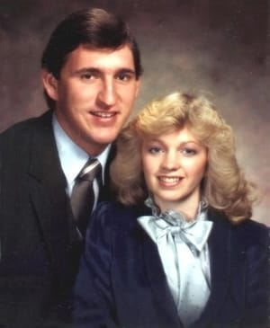
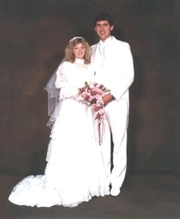

About Us
 Gordon Mathis and Julie Johnson both grew up in Price, Utah, where they met, fell in love, and married in 1984.
The couple made their first home in Orem, Utah, while Gordon attended school at Utah Technical College and later Weber State University's extension at Utah Valley University. During this time, the couple welcomed four children into their home: Jessica, David, Whitney, and Heather.
After 11 years living in Orem, the couple moved to Spanish Fork, Utah, to build a bigger house. After the move, the family welcomed two more children: McKell and Karen.
Gordon is a Software Engineer. Julie spent 30 years as a stay-at-home mom (the best job on the planet). When McKell and Karen grew up a bit, Julie went to work as a Substitue Teacher for the Nebo School District, preferring to teach on the High School level. She also took online classes from BYU-Idaho, receiving an Associate's degree in Applied Business Management.
As of 2021, the couple have six children and 9 grandchildren. This website was designed by Julie for a beginning web design and development class at BYU-Idaho. She hopes her family will decide to take advantage of it to keep in touch with eachother and grow stronger family bonds. Nothing is more important to Gordon and Julie than their family. This site is dedicated to our posterity. We love you!